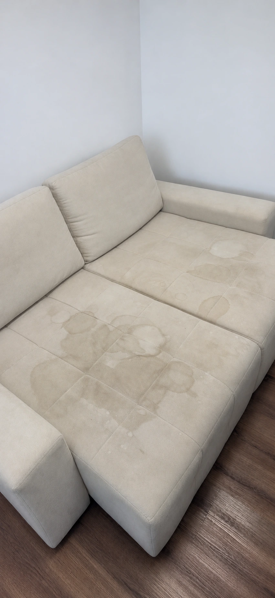

Sofás
Limpeza do tecido e dos detalhes que fazem parte dos seus momentos de descanso.
CUIDADO QUE SE SENTE. CONFORTO QUE FICA.
Renove o conforto dos seus estofados com higienização e proteção pensadas para o seu dia a dia.
Solicitar orçamento ›Conheça os exemplos ↓01 / NOSSOS SERVIÇOS
Do sofá da sala aos bancos do carro.
Tratamento adequado para cada peça,
tecido e necessidade.
Limpeza do tecido e dos detalhes que fazem parte dos seus momentos de descanso.
Cuidado com o assento, o encosto e os braços da sua peça favorita.
Higienização para renovar a limpeza do espaço onde você descansa.
Atenção aos estofados da sala de jantar, do escritório e de outros ambientes.
Limpeza dos bancos de tecido para deixar o interior do carro mais agradável.
Proteção que ajuda a reduzir a absorção de líquidos em tecidos compatíveis.
02 / ANTES & DEPOIS
Explore os exemplos e compare.
Três peças, diferentes possibilidades.


O conforto da sala começa com um estofado bem cuidado.
Arraste a linha ou use os botões acima.
Imagens ilustrativas de um modelo demonstrativo.
03 / PROTEÇÃO PARA O DIA A DIA
A impermeabilização ajuda a reduzir a absorção de líquidos e facilita o cuidado com o tecido.
A aplicação depende da avaliação do material. Em caso de derramamento, a remoção rápida do líquido continua sendo importante.
Consultar impermeabilização ›04 / COMO FUNCIONA
Envie fotos ou um vídeo da peça pelo WhatsApp e informe sua região.
O tipo de tecido, o tamanho e o estado da peça orientam o orçamento.
Escolha uma data disponível e receba as orientações de preparo e secagem.
05 / COMENTÁRIOS
Exemplos fictícios para demonstrar o layout.
Substitua pelas avaliações reais da sua empresa.
Desde o primeiro contato, tudo foi explicado com clareza. Foi fácil combinar o atendimento e tirar minhas dúvidas.
Comentário ilustrativo
Gostei do cuidado com os móveis e com o ambiente durante o serviço. Atenção aos detalhes faz diferença.
Comentário ilustrativo
O sofá ficou com uma aparência muito melhor. Recebi orientações sobre a secagem e os cuidados depois da limpeza.
Comentário ilustrativo
Explicaram como funciona a proteção e como agir se cair algum líquido. O atendimento foi muito atencioso.
Comentário ilustrativo
MAIS CUIDADO. MAIS CONFORTO.
Envie fotos do seu estofado e converse sobre o serviço ideal.
Modelo de apresentação • contato personalizável